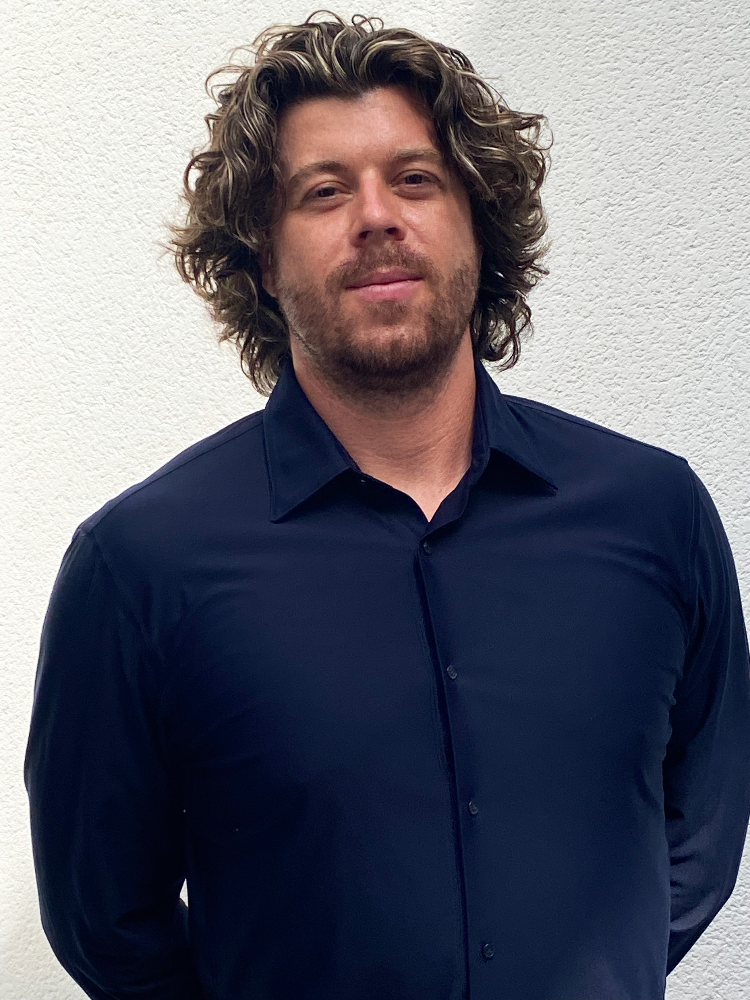

Parcours personnel
Diplômé en master d'architecture, je suis actuellement en période de formation HMONP et Revit suite à la fin de mon dernier contrat au sein de l'agence d'architecture Guénot & Associés, à Décines-Charpieu à l'Est de Lyon.
De par mon parcours professionnel, j'ai développé des capacités d'adaptation, d'intégration à un groupe, et d'autonomie ainsi que des connaissances et des aptitudes versatiles.
Mon expérience professionnelle m'a permis de suivre des projets architecturaux de leur conception à leur réalisation, d'un spectre allant de maisons individuelles neuves à de grandes réhabilitations d'ensembles de logements.
Expérience professionnelle
Architecte collaborateur
- Maîtrise des outils CAO : AutoCAD / Rhino 3D / Vectorworks
- Conformité réglementaire et administrative : gestion des dossiers techniques et des expertises, normes et procédures de permis
- Gestion d'un projet sur le temps long : pilotage de la conception à la réalisation, petite expérience chantier
- Collaboration interdisciplinaire : coordination avec ingénieurs, clients et autorités, communication technique claire et adaptée
- Création de rendus professionnels : visualisation 3D (V-Ray / Twinmotion), plans techniques détaillés et présentations clients
- Encadrement et coordination d'équipe : animation et coordination d'équipes pluridisciplinaires, gestion des conflits et amélioration des processus
- Conception et créativité architecturale : développement de concepts innovants et adaptés aux contraintes, recherche de solutions techniques et esthétiques
- Rigueur et analyse : vérification des conformités et optimisation des projets, résolution de problèmes techniques et réglementaires
Stage en laboratoire d'architecture
- Expérimentation architecturale à l'échelle 1
- Prototypage de techniques constructives : pisé, ossature bois et béton de chanvre
- Apprentissage du travail du métal (soudure) et du bois (menuiserie, charpente)
Auto-entrepreneur
- Autonomie et gestion de projets
- Conseil clients, communication commerciale et animation d'évènements
Contrat étudiant : moniteur de fablab
Stage comme poseur de menuiseries
Stage puis CDD en architecture
- Dessin technique : Allplan, Autocad
CDD — Agent d'entretien
- Rigueur et respect des protocoles en environnement hospitalier
Formation
Habilitation à la maîtrise d'œuvre en son nom propre — HMONP
Master en architecture
Licence en architecture
Guillaume Moussié
Architecte Diplômé d'État
